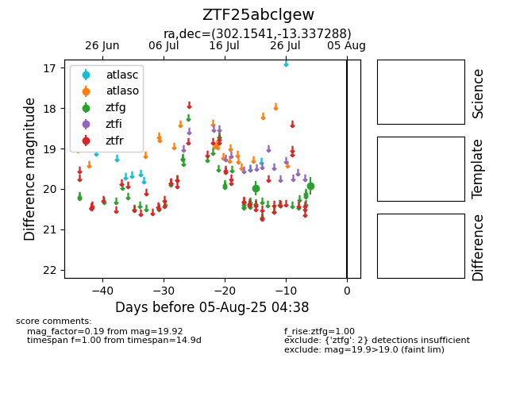

Target ZTF25abclgew at 2025-08-05 04:38, see:
FINK: fink-portal.org/ZTF25abclgew
Lasair: lasair-ztf.lsst.ac.uk/objects/ZTF25abclgew
ALeRCE: alerce.online/object/ZTF25abclgew
alt names
ZTF25abclgew (ztf,fink)
coordinates:
equatorial (ra, dec) = (302.1541,-13.33729)
galactic (l, b) = (29.2747,-23.03734)
photometry
last ztfg=19.92
2 ztfg detections
